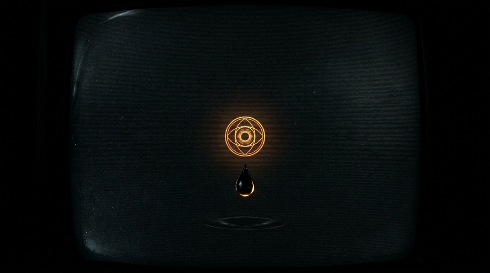

0100:00–01:30
01_silent_omen_symbolism.pngPrologue00:00–01:30
The mark in the glass
FRAMEWide, locked, centered
CAMERAHold; the droplet trembles once and falls
A nearly black CRT. A thin amber ring and one suspended black drop are just visible. The first ripple disappears before the audience can decide what it means.
ON-SCREEN TEXT
MAY 14, 1994 · DO NOT ANSWER A FAMILIAR VOICE AFTER MIDNIGHT.
MAY 14, 1994 · DO NOT ANSWER A FAMILIAR VOICE AFTER MIDNIGHT.
SOUND
Low electrical presence; let the silence around it stay audible.
Low electrical presence; let the silence around it stay audible.
Image-generation prompt
A restrained 1990s CRT close-wide frame, almost black. One fine amber circular aperture above a single glossy black droplet and a delicate water ripple. Symmetrical, minimal, analog texture, subtle scanlines. Hold the image in darkness; no words or logos. 4:3 picture inside a black 16:9 matte.
![Bimal chooses to go storyboard frame]()
![The courtyard tips away storyboard frame]()
![A clean, quiet place storyboard frame]()